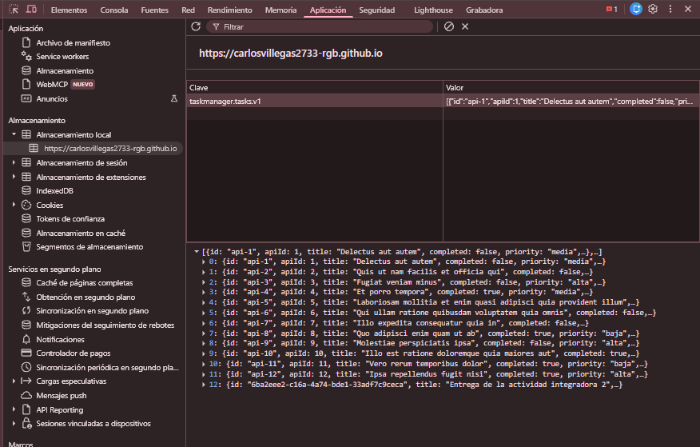

Este informe documenta el desarrollo de TaskManager, una aplicación de gestión de tareas
implementada con JavaScript Vanilla (ES6+) sin frameworks ni librerías. La aplicación permite
crear, editar, completar y eliminar tareas; filtrar por estado y buscar por título en tiempo
real; ordenar por fecha o prioridad; y visualizar métricas calculadas en vivo. Los datos se
importan desde la API pública JSONPlaceholder en la primera ejecución y se persisten en
localStorage, de modo que la aplicación sigue operando sin conexión. La técnica
investigada es la arquitectura modular nativa de ES6: seis módulos con responsabilidades
delimitadas y dependencias explícitas. El documento incluye la evidencia de ejecución y la
verificación de cada requisito.
La arquitectura modular consiste en dividir la aplicación en archivos independientes que declaran
explícitamente qué ofrecen y qué necesitan. ES6 incorporó este mecanismo al lenguaje mediante
export e import, sin necesidad de bundlers ni librerías externas.
1.1 Cómo funciona
Cada archivo es un módulo con su propio ámbito: las variables y funciones no se filtran al objeto
global. Con export se expone una parte de ese ámbito y con import se
declara la dependencia desde otro módulo. El navegador construye un grafo de dependencias al cargar
la etiqueta <script type="module">, evalúa cada módulo una sola vez y comparte la
misma instancia entre todos los importadores. Además, los módulos se ejecutan en modo estricto y
se cargan de forma diferida, lo que evita efectos colaterales en el orden de carga.
1.2 Aplicación en el proyecto
Módulo
Responsabilidad
Depende de
api.js
Consulta JSONPlaceholder, valida la respuesta y mapea cada todo al modelo local.
validation.js
storage.js
Lee, valida y escribe la lista completa en localStorage. Único punto de acceso a Web Storage.
validation.js
validation.js
Reglas del formulario: título obligatorio (3–80 caracteres) y prioridad válida.
—
taskStore.js
Estado en memoria, CRUD, filtros, búsqueda, ordenamiento y métricas.
storage.js, validation.js
ui.js
Renderiza el estado, gestiona diálogos, notificaciones y eventos de la interfaz.
taskStore.js
app.js
Arranque, sincronización con la API y eventos online/offline.
api.js, storage.js, taskStore.js, ui.js
1.3 Implementación
// js/modules/storage.js — único punto de acceso a localStorageexport function saveTasks(tasks) {
try {
localStorage.setItem(STORAGE_KEY, JSON.stringify(tasks));
return true;
} catch (error) {
return false;
}
}
// js/app.js — el resto de la app consume la interfaz públicaimport { loadTasks } from'./modules/storage.js';
1.4 Ventajas observadas y límites
Responsabilidad única. Cambiar la API solo afecta a api.js; cambiar la persistencia, solo a storage.js.
Dependencias explícitas. El grafo se lee en los import; no hay estado global compartido de forma oculta.
Testabilidad.taskStore.js se prueba en Node con un stub de localStorage: 19 pruebas sin navegador.
Límite. Los módulos requieren servirse por HTTP: abrir el archivo con file:// bloquea los import por CORS.
2. Evidencia de ejecución
La aplicación se ejecutó en Chrome sobre GitHub Pages. La Figura 1 muestra el panel
Application → Local Storage de DevTools con la clave taskmanager.tasks.v1
y el arreglo JSON completo de tareas.

Figura 1. Panel Application → Local Storage con las 13 tareas serializadas.
El panel confirma que cada operación escribe el arreglo completo bajo la clave
taskmanager.tasks.v1: aparecen las 12 tareas importadas de la API (con
apiId 1–12) y la tarea creada localmente, identificada con un UUID. Al recargar,
loadTasks() aplica JSON.parse(), valida la estructura de cada elemento y
reconstruye el estado sin volver a consultar la API; por eso la aplicación funciona sin conexión.
3. Verificación de requisitos
✔CRUD completo. Crear, editar, completar y eliminar persisten tras recargar.
✔Validación estricta. Título vacío o prioridad sin elegir bloquean el envío con mensaje.
✔Filtros y búsqueda. Por estado y en tiempo real con includes y toLowerCase.
✔Ordenamiento.sort() por fecha (asc/desc) y prioridad alta → baja.
✔Métricas. Total, pendientes, completadas y progreso recalculados en cada cambio.
✔Carga inicial.fetch + async/await; 12 tareas importadas sin duplicados.
✔Errores y offline.try/catch, timeout de 8 s y aviso visual; la app sigue operando sin red.
✔Persistencia. Clave taskmanager.tasks.v1 con JSON.stringify / JSON.parse.
✔Arquitectura modular. Seis módulos con import/export y sin dependencias externas.
4. Conclusión
La aplicación cumple los cuatro bloques funcionales y los cuatro puntos de API y persistencia. La
arquitectura modular permitió aislar el almacenamiento y la red detrás de interfaces pequeñas, lo
que hizo posible probar la lógica sin navegador y detectar dos errores de interfaz que solo
aparecían en ejecución. El resultado es una aplicación sin dependencias externas, verificable y
mantenible, con un historial de cambios organizado por etapas.